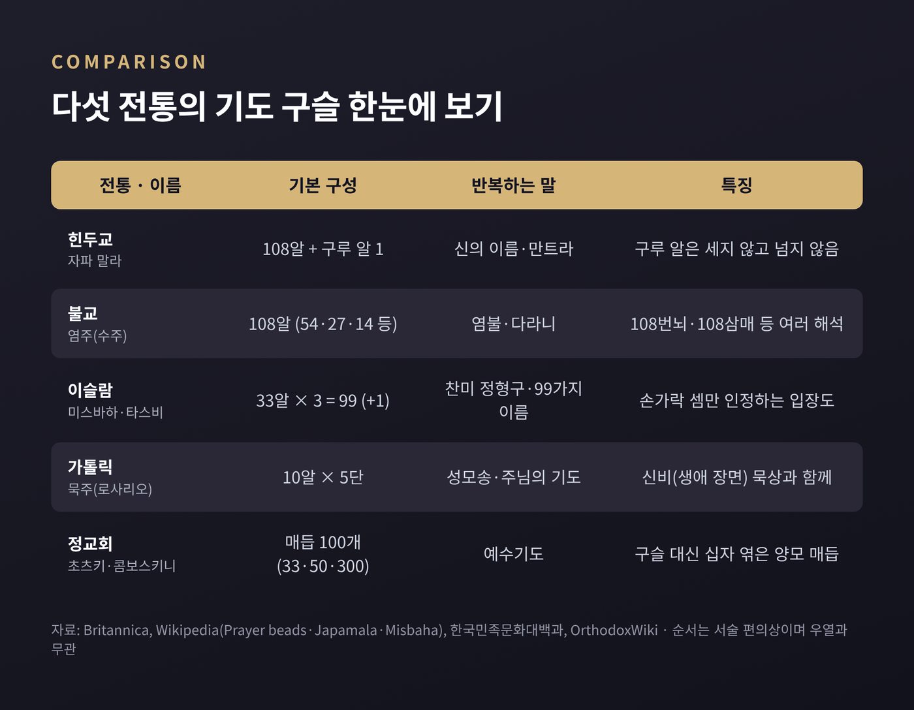
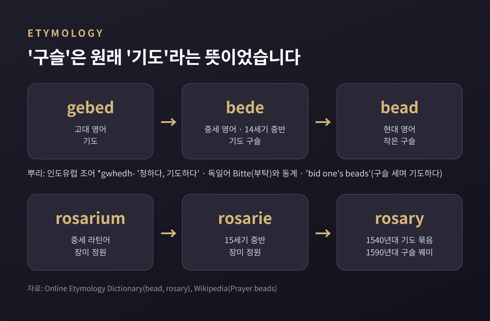
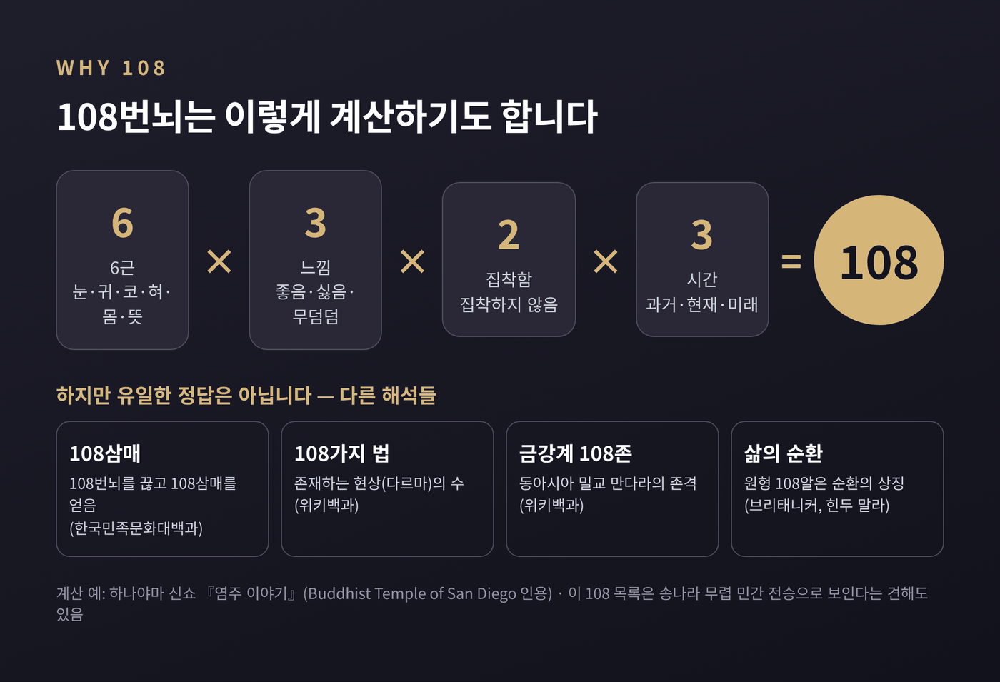
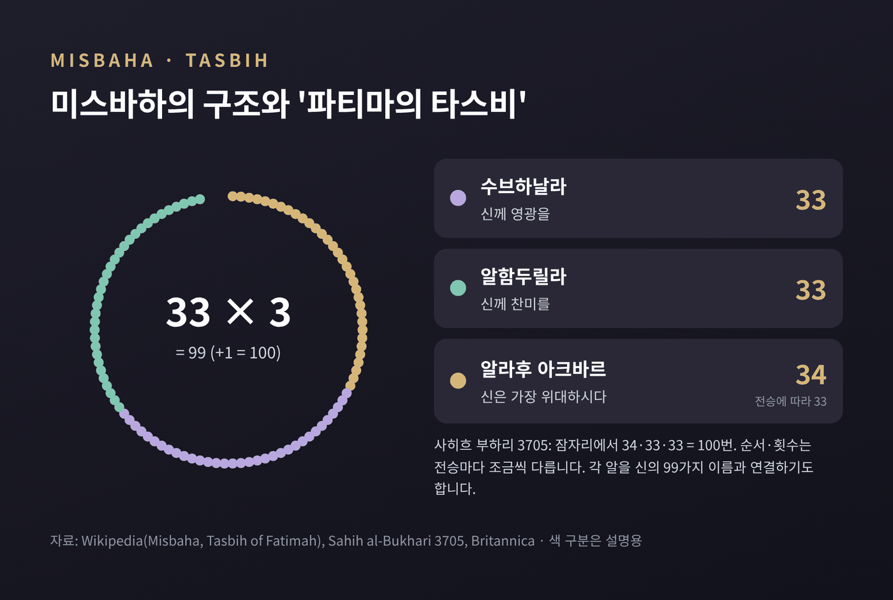
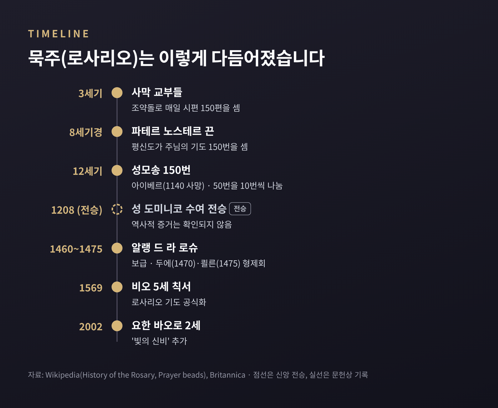
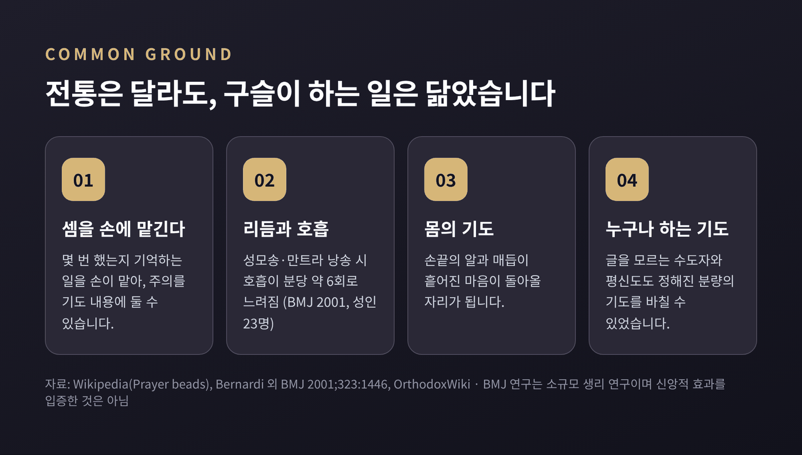

기도 구슬의 비교종교학 — 묵주·염주·미스바하는 왜 기도를 세었을까

이번 글에서는 여러 종교에 공통으로 나타나는 '기도 구슬'을 비교종교학의 눈으로 정리해 보겠습니다. 힌두교의 자파 말라, 불교 염주, 이슬람 미스바하, 가톨릭 묵주(로사리오), 정교회 기도 매듭까지 다섯 갈래를 차례로 살핍니다. 특정 신앙의 옳고 그름이 아니라, 사람들이 왜 기도를 '세는' 방식을 만들었는지에 초점을 둡니다.
먼저 세 줄로 요약하면 이렇습니다.
- 구슬의 수는 전통마다 다릅니다. 108(힌두·불교), 33×3=99(이슬람), 10×5=50(가톨릭), 100(정교회)이 대표적입니다.
- 숫자에는 각 전통의 의미가 담겼지만, 기원은 대부분 '전승'과 '역사'가 갈립니다.
- 공통점은 분명합니다. 셈을 손에 맡기고, 마음은 기도에 두려는 장치라는 점입니다.

■ '구슬'이라는 말 자체가 '기도'였습니다
영어 bead는 지금 '작은 구슬'을 뜻합니다. 그런데 거슬러 올라가면 뜻이 다릅니다.
온라인 어원사전에 따르면 bead는 14세기 중반 중세 영어 bede로 처음 기록됩니다. 그 뿌리는 고대 영어 gebed, 곧 '기도'입니다. '청하다, 기도하다'라는 인도유럽 조어 *gwhedh-까지 이어지고, 독일어 Bitte와도 친척입니다.
묵주 알을 하나씩 넘기며 기도하는 일을 'bid one's beads'라고 불렀습니다. 기도를 세던 물건에 '기도'라는 이름이 옮겨붙은 셈입니다. 그러다 의미가 물건 쪽으로 기울어, 이제는 그냥 '구슬'이 되었습니다.
rosary도 비슷한 사연을 지녔습니다. 15세기 중반 영어 rosarie는 '장미 정원'이었습니다. 중세 라틴어 rosarium에서 왔고, 1540년대에 '기도의 묶음'이라는 뜻이 붙었습니다. 기도를 장미 정원에 빗댄 표현이었고, 1590년대에 구슬 꿰미 자체를 가리키게 됩니다.

■ 자파 말라 — 108알과 넘지 않는 한 알
힌두교의 자파 말라(japa mala)에서 시작하겠습니다. mālā는 산스크리트로 '화환'입니다. japa는 '낮은 소리로 읊조리다, 속으로 반복하다'라는 어근에서 왔습니다. 신의 이름이나 만트라를 명상하듯 되풀이하는 수행을 가리킵니다.
기본 구조는 크기와 재질이 같은 108알입니다. 여기에 '구루 알' 또는 '수메루'라 부르는 109번째 큰 알이 붙습니다. 이 알은 세지 않습니다. 여러 바퀴를 돌 때도 구루 알을 넘지 않고 방향을 바꿔 되돌아갑니다. 그래서 수메루는 말라 위의 '고정점'이라고 설명됩니다.
재질에도 신앙의 결이 드러납니다. 시바를 섬기는 샤이바 전통은 루드락샤 열매를, 비슈누를 섬기는 바이슈나바 전통은 툴시(성스러운 바질) 나무 알을 씁니다. 하레 크리슈나 신자들이 크리슈나의 이름을 외울 때 쓰는 것도 이 말라입니다.
다만 기원은 분명하지 않습니다. 위키백과의 자파 말라 항목은 "말라의 구체적 기원은 알려져 있지 않다"고 적습니다. 초기 불교 경전인 아함과 니카야에는 말라가 나오지 않습니다. 그래서 힌두·불교·자이나 가운데 누가 먼저 썼는지 단정하기 어렵습니다. 브리태니커는 불교 말라가 "아마도 힌두교에서 받아들인 것"이라고 조심스럽게 서술합니다.
■ 불교 염주 — 108번뇌는 하나의 해석입니다
한국민족문화대백과사전은 염주를 "염불이나 다라니를 외울 때 구슬을 세어 횟수를 기억하는 도구"로 설명합니다. 수주(數珠)·송주(誦珠)라고도 부릅니다. 이름에서부터 '세는 구슬'이라는 성격이 보입니다.
문헌상 출발점으로 자주 꼽히는 것은 『목환자경(木槵子經)』입니다. 번뇌와 업보를 없애려면 목환자(무환자나무 열매) 108개를 꿰어 늘 지니라는 내용입니다. 불·법·승의 이름을 한 번 외울 때마다 구슬을 하나씩 넘기라고 합니다. 위키백과는 이 경을 말라를 만트라 낭송에 쓴 최초의 문헌 언급으로 소개합니다. 그림으로 남은 가장 이른 분명한 사례는 북위 시대 보살상이 손에 든 말라입니다.
108의 의미로 가장 널리 알려진 것은 '108번뇌'입니다. 흔히 소개되는 계산은 이렇습니다. 6근(눈·귀·코·혀·몸·뜻) × 3가지 느낌(좋음·싫음·무덤덤) = 18. 여기에 집착하느냐 아니냐를 곱해 36, 다시 과거·현재·미래를 곱하면 108입니다.

그러나 이것이 유일한 정답은 아닙니다. 샌디에이고의 한 불교 사원은 이 108개 목록이 송나라 무렵의 민간 전승으로 보이며, 한역 대승 경전에서 직접 근거를 찾지 못했다고 밝힙니다. 한국민족문화대백과는 108을 '108번뇌를 끊고 108삼매를 얻음'으로 풀고, 위키백과는 108가지 법(현상), 금강계 만다라의 108존 같은 설명도 함께 소개합니다. 숫자는 수백 년 동안 그대로였지만, 설명은 여러 갈래로 자랐습니다.
알 수도 108만 있는 것이 아닙니다. 『수주공덕경』은 108·54·27·14과를, 『금강정유가염송경』은 1,080·108·54·27과를 듭니다. 54는 보살 수행의 54단계, 14는 관세음보살의 14무외로 풀이됩니다. 정토 계열에서는 절 횟수를 세는 27알 염주가 쓰이고, 티베트 불교는 108알 중 100은 만트라에, 나머지 8은 모든 중생에게 회향한다고 설명합니다. 중국 불교에서는 승려와 재가자가 손목에 짧은 염주를 '붓다의 상징'으로 차기도 합니다. 우리가 흔히 '단주'라 부르는 손목 염주가 이런 흐름에 닿아 있습니다.
■ 미스바하 — 33알 세 바퀴, 그리고 99가지 이름
이슬람의 기도 구슬은 미스바하(misbaha), 수브하(subha), 타스비(tasbih)로 불립니다. 튀르키예에서는 테스피(tespih)라 합니다.
전형적인 형태는 33알씩 세 묶음입니다. 사이에 표지 알 두 개, 끝에 손잡이가 달려 모두 100알 남짓이 됩니다. 33알짜리 작은 미스바하는 세 바퀴를 돌려 99를 채웁니다. 브리태니커와 19세기 휴즈의 『이슬람 사전』은 각 알이 신의 '가장 아름다운 이름'(99가지 속성)과 이어진다고 설명합니다.
자주 함께 언급되는 것이 '파티마의 타스비'입니다. 사히흐 부하리 3705에 따르면, 맷돌질에 지친 파티마가 하인을 청하자 무함마드는 잠자리에서 외울 말을 대신 가르칩니다. '알라후 아크바르'(신은 가장 위대하시다) 34번, '수브하날라'(신께 영광을) 33번, '알함두릴라'(신께 찬미를) 33번. 합해서 100번이고, "하인보다 낫다"는 말이 덧붙습니다.

다만 전승마다 세부가 다릅니다. 타크비르를 33번으로 전하는 전승도 있고, 순서가 다른 경우도 있습니다. 시아 전통에서는 이를 매 예배 뒤에 특히 권합니다.
구슬 사용 자체를 두고도 논쟁이 이어졌습니다. 초기 무슬림은 손가락이나 조약돌로 셌다고 전합니다. 일부 하디스는 예배 후 오른손 손가락으로 세기를 권합니다. 위키백과는 15세기에도 반대가 있어 알 수유티가 옹호론을 썼다고 적고, 오늘날에도 일부는 구슬을 비드아(혁신)로 보아 손가락 셈만 인정합니다. 반면 시아 전통은 이맘 후세인의 묘 흙으로 빚은 구슬을 귀하게 여깁니다. 한 전통 안에서도 '세는 도구'를 바라보는 시선이 이렇게 다양합니다.
■ 가톨릭 묵주 — 전승과 역사는 따로 읽어야 합니다
가톨릭 로사리오(묵주)는 10알 한 단이 다섯 번 이어진 꼴입니다. 큰 알에서 주님의 기도와 영광송을, 작은 알에서 성모송을 바칩니다. 전통적으로는 세 바퀴, 곧 15단에 성모송 150번이 한 묶음이었습니다. 2002년 요한 바오로 2세가 '빛의 신비'를 더해 묵상 주제는 네 묶음이 되었습니다.
150이라는 수에는 사연이 있습니다. 3세기 사막 교부들은 매일 시편 150편을 조약돌로 셌습니다. 서방에서는 글을 모르는 평신도가 시편 대신 주님의 기도 150번을 바쳤고, 이를 세는 매듭 끈을 '파테르 노스테르'라 불렀습니다. 13세기 파리에는 이 끈을 만드는 장인 길드가 넷이나 있었습니다. 12세기에는 성모송을 150번 바친 수도자의 기록과, 50번을 10번씩 나누는 지침이 등장합니다.
전승은 1208년 프루유에서 성모가 성 도미니코에게 묵주를 건넸다고 전합니다. 역사학의 평가는 다릅니다. 위키백과의 로사리오 역사 항목은 "도미니코와 로사리오를 직접 잇는 역사적 증거는 발견된 적이 없다"고 쓰고, 1912년 가톨릭 백과사전의 허버트 서스턴 이래 대부분의 학자가 이를 전설의 영역으로 본다고 정리합니다. 브리태니커도 시편이나 성무일도를 대신하며 점차 발전했을 가능성을 제시합니다.

오늘의 형태는 15세기에 다듬어졌습니다. 카르투지오회의 프로이센의 도미니코(1382~1460)는 성모송 50번마다 그리스도 생애의 한 문장을 붙였습니다. 도미니코회의 알랭 드 라 로슈는 1460년부터 1475년 세상을 떠날 때까지 이 기도를 퍼뜨렸고, 두에와 쾰른에 형제회가 생겼습니다. 1569년 비오 5세의 칙서가 이 기도를 공식화했고, 1571년 레판토 해전을 앞두고 교황이 로사리오 기도를 호소한 일은 훗날 '로사리오의 성모' 축일로 이어집니다.
전승은 신자들에게 의미의 이야기이고, 역사는 증거의 이야기입니다. 둘을 섞지 않고 나란히 놓는 것이 비교종교학의 기본 예의라고 생각합니다.
■ 정교회 초츠키 — 풀리지 않는 매듭
정교회의 기도 매듭은 그리스어로 콤보스키니, 러시아어로 초츠키 또는 베르비차라 부릅니다. 구슬이 아니라 양모 매듭입니다. 매듭 하나하나에 작은 십자 일곱 개가 엮여 있습니다.
전승은 4세기 성 파코미우스가 글을 모르는 수도자들도 일정한 기도와 절을 지키도록 이 끈을 고안했다고 전합니다. 성 안토니우스에 얽힌 이야기도 유명합니다. 기도마다 매듭을 지었더니 악마가 자꾸 풀어버려, 십자 모양으로 엮은 매듭을 만들자 더는 풀지 못했다는 것입니다. 그 전에는 조약돌을 그릇에서 그릇으로 옮기며 셌다고 합니다.
매듭은 역사적으로 100개가 전형이고, 오늘날에는 300·50·33개짜리도 씁니다. 33은 그리스도가 세상에 머문 햇수로 풀이됩니다. 반복하는 말은 짧은 '예수기도'입니다. "주 예수 그리스도, 하느님의 아들이시여, 죄인인 저를 불쌍히 여기소서." '쉬지 말고 기도하라'(데살로니가전서 5:17)는 바울의 권고를 몸으로 옮기려는 시도로 이해됩니다. 일부 러시아 전례서는 예배를 예수기도 300~1,500번으로 대신하는 것을 허용할 정도입니다.
브리태니커는 정교회 기도 매듭이 가톨릭 묵주보다 앞서며 주로 수도원 전통이라고 설명합니다.
■ 시크교와 바하이 — 쓰되, 경계하기도 합니다
시크교는 전통적으로 108알 말라를 씁니다. 와헤구루, 사트남 같은 신의 이름을 되풀이하는 수행(남 자프나)에 쓰입니다. 흥미로운 점은 경전 안에 비판도 함께 있다는 사실입니다. 구루 그란트 사힙에는 겉으로만 말라를 돌리는 이를 꼬집는 카비르의 구절들이 실려 있습니다. 시크교 위키는 "구르마트(구루의 가르침)는 말라 사용을 장려하지 않는다"고 적습니다.
바하이 신앙에서는 '알라우아브하'(신은 가장 영화로우시다)를 하루 95번 외웁니다. 『키타브-이-아크다스』에 근거한 실천이며, 95알 또는 19알에 카운터 구슬 다섯 개를 단 꿰미를 씁니다. 구슬은 도움일 뿐 필수는 아니라는 설명이 따릅니다.
■ 구슬은 어떻게 퍼졌을까 — 정해진 답은 없습니다
가장 널리 퍼진 가설은 '인도 기원 서진설'입니다. 인도에서 시작된 구슬이 불교와 함께 동아시아로, 또 서아시아를 거쳐 이슬람과 그리스도교 세계로 갔다는 그림입니다. 19세기 휴즈의 『이슬람 사전』은 "무슬림이 불교도에게서 묵주를 빌려왔을 가능성이 높아 보인다", "십자군이 이를 그리스도교 세계에 들였다"고 추정합니다. 시아 백과인 위키시아는 불교 기원설과 그리스도교 기원설이 함께 있다고 소개합니다.
그러나 반대 방향의 사실들도 있습니다. 그리스도교 수도자들의 조약돌·매듭 셈은 3~4세기까지 올라갑니다. 2022년 영국 린디스판에서는 8~9세기 연어 척추뼈로 만든 기도 구슬이 나왔습니다. 1125년에는 고다이바 부인이 보석 꿰미로 기도를 셌다는 기록도 있습니다. 모두 첫 십자군(1096년)보다 앞선 일입니다.
정리하면 이렇습니다. 한 곳에서 시작해 퍼졌다는 설명도, 여러 곳에서 따로 생겨났다는 설명도 가능합니다. 현재의 자료로는 어느 쪽도 확정하기 어렵습니다.
■ 왜 '세는' 기도였을까 — 손, 숨, 그리고 주의
전통은 달라도 구슬이 하는 일은 놀랄 만큼 닮았습니다.
첫째, 셈을 손에 맡깁니다. 몇 번 했는지 머리로 기억하지 않아도 되니, 주의를 기도의 내용에 둘 수 있습니다.
둘째, 리듬을 만듭니다. 2001년 영국의학저널(BMJ)에 실린 연구는 건강한 성인 23명에게 라틴어 성모송과 요가 만트라를 낭송하게 했습니다. 두 경우 모두 호흡이 거의 정확히 분당 6회로 느려졌고, 심혈관 리듬이 강하게 동기화되었습니다. 연구진은 로사리오가 몸의 자연스러운 리듬과 맞아떨어져 발전했을 수도 있다고 조심스럽게 제안했습니다. 작은 생리학 연구일 뿐, 신앙의 효과를 증명한 것은 아니라는 점도 함께 짚어 둡니다.
셋째, 몸으로 하는 기도입니다. 손끝에 닿는 알과 매듭이 마음이 흩어질 때 돌아올 자리가 됩니다.
넷째, 누구나 할 수 있게 합니다. 글을 모르는 수도자와 평신도가 정해진 분량의 기도를 바칠 수 있었던 것도 끈과 구슬 덕분이었습니다.

차이도 분명합니다. 반복하는 말이 다릅니다. 신의 이름과 만트라, 짧은 찬미 정형구, 성경에 기댄 기도와 묵상, 짧은 청원 기도로 갈립니다. 숫자의 근거도 다릅니다. 번뇌와 삼매, 99가지 이름, 시편 150편, 100번의 예수기도가 각자의 이야기를 품고 있습니다. 그리고 이슬람과 시크교처럼, 구슬이 형식으로 굳는 것을 경계하는 목소리를 안에 품은 전통도 있습니다.
끝으로 한 마디만 더 드리겠습니다.
예전에는 조약돌과 손가락이 기도를 셌습니다. 지금은 108알, 33알, 50알, 100매듭이 그 일을 합니다. 도구는 달라졌지만 겨냥하는 바는 크게 다르지 않아 보입니다.
"손이 세는 동안, 마음은 다른 곳에 머문다."
여러 전통이 저마다 구슬을 꿴 이유를 하나로 묶을 수 있느냐고 물으신다면, 저는 그 한 문장이 가장 가깝다고 답하겠습니다.
■ 참고 자료
- Encyclopaedia Britannica — Rosary
- Wikipedia — Prayer beads
- Wikipedia — Japamala
- New World Encyclopedia — Japa Mala
- 한국민족문화대백과사전 — 염주
- Buddhist Temple of San Diego — The Importance of the Number 108
- Wikipedia — Misbaha
- Wikipedia — Tasbih of Fatimah
- Sahih al-Bukhari 3705 (Hadith Unlocked)
- T. P. Hughes, Dictionary of Islam — Rosary
- WikiShia — Prayer beads
- Wikipedia — History of the Rosary
- OrthodoxWiki — Prayer rope
- Aleteia — The Orthodox prayer rope, komboskini (2017)
- SikhiWiki — Mala
- Bahaipedia — Alláh-u-Abhá
- Online Etymology Dictionary — bead / rosary
- Bernardi L. et al., BMJ 2001 — Effect of rosary prayer and yoga mantras on autonomic cardiovascular rhythms
#기도구슬 #비교종교학 #묵주 #염주 #미스바하 #자파말라 #초츠키 #108번뇌 #로사리오